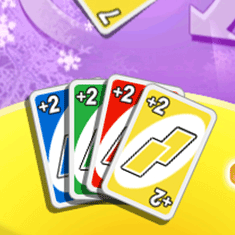
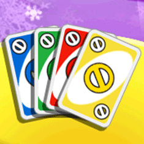
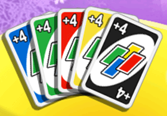
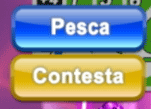

21 |
Carte |
 |
|
Le carte di base usate nel gioco determinano il corso della partita e sono di colore blu, verde, rosso e giallo, con numeri da 0 a 9. Pesca 2 Quando questa carta viene giocata secondo le regole classiche, il giocatore successivo è costretto a pescare due carte dal mazzo e a saltare il turno. Se l'opzione delle penalità è abilitata e un giocatore scarta la carta Pesca 2, il giocatore successivo potrà evitare la penalità scartando la stessa carta. In questo caso, il giocatore che segue riceverà una penalità doppia. Se anche questo giocatore possiede la stessa carta, la penalità passa al giocatore successivo. Nel mazzo ci sono otto carte Pesca 2, due per ciascun colore.  Salta turno Quando questa carta viene giocata, il giocatore successivo è costretto a saltare il turno. Nel mazzo ci sono otto carte Salta turno, due per ciascun colore.  Cambia giro Questa carta inverte semplicemente la direzione di gioco. Il gioco riprenderà in senso contrario finché non viene giocata un'altra carta Cambia giro. Nel mazzo ci sono otto carte Cambia giro, due per ciascun colore.
Jolly Le carte Jolly si possono giocare indipendentemente dal colore dell'ultima carta scartata. Dopo aver giocato questa carta, il giocatore sceglierà il colore con cui proseguire la partita.
Jolly pesca 4 Questa carta permette di cambiare il colore attuale del gioco e costringe il giocatore successivo a pescare quattro carte dal mazzo e a saltare il turno. Può essere giocata solo quando il giocatore non ha carte corrispondenti al colore giocato dal giocatore precedente. È anche possibile bluffare e giocarla avendo in mano altre carte del colore richiesto; tuttavia se questa giocata viene scoperta (e contestata con successo), il giocatore in questione dovrà pescare quattro carte. Nota: se il giocatore ha in mano una carta dello stesso numero, ma di un colore diverso o una carta Azione (Cambia giro, Salta turno o Pesca 2), potrà giocare il Jolly pesca 4 senza incorrere nella penalità. Invece se il giocatore ha una carta Jolly, non potrà giocare la carta Jolly pesca 4 senza il rischio di dover pescare 4 carte nel caso in cui un altro giocatore contesti la giocata.  Se un giocatore scarta la carta Jolly pesca 4, il giocatore che segue può contestare la mossa selezionando l'icona Contesta oppure può pescare quattro carte selezionando l'icona Pesca.  |


 |
 |
 |